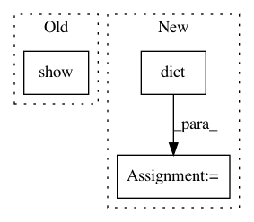

d795f811eb13a20e18aa30c435cef0ad99e830ea,examples/plot_unet_tutorial.py,,,#,127
Before Change
ax.set_title("raw data")
fig.tight_layout()
pylab.show()
After Change
// or use a some convolutions to increase the number of channels
// before the the UNet.
from inferno.extensions.layers import ConvReLU2D
model_a = torch.nn.Sequential(
ConvReLU2D(in_channels=image_channels, out_channels=5, kernel_size=3),
ResBlockUNet(dim=2, in_channels=5, out_channels=pred_channels, activated=False,
res_block_kwargs=dict(batchnorm=True,size=2)) ,
RemoveSingletonDimension(dim=1)
// torch.nn.Sigmoid()
)
In pattern: SUPERPATTERN
Frequency: 4
Non-data size: 3
Instances
Project Name: inferno-pytorch/inferno
Commit Name: d795f811eb13a20e18aa30c435cef0ad99e830ea
Time: 2018-08-10
Author: thorsten.beier@iwr.uni-heidelberg.de
File Name: examples/plot_unet_tutorial.py
Class Name:
Method Name:
Project Name: mne-tools/mne-python
Commit Name: 0706ad95fa091003f29bd1d568a17324453bb297
Time: 2018-09-15
Author: jasmainak@users.noreply.github.com
File Name: examples/inverse/plot_lcmv_beamformer_volume.py
Class Name:
Method Name:
Project Name: matplotlib/matplotlib
Commit Name: 5608ac37feb7fad002c0e030ba30f4924e8c1fc1
Time: 2018-09-24
Author: anntzer.lee@gmail.com
File Name: examples/statistics/barchart_demo.py
Class Name:
Method Name:
Project Name: bokeh/bokeh
Commit Name: c28e2ae6b5f2c1f533a924c86be808c2b8996b70
Time: 2015-12-22
Author: bryanv@continuum.io
File Name: examples/plotting/file/scatter_selection.py
Class Name:
Method Name: